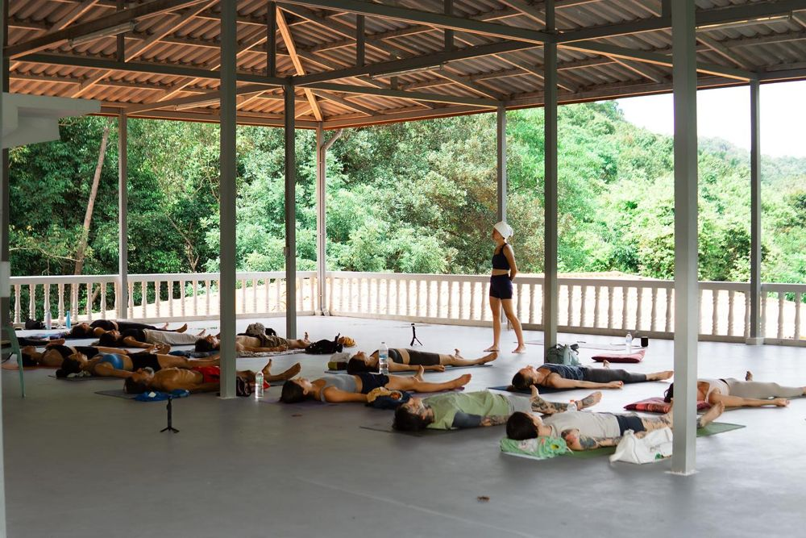

Кундалини-йога в храме
Групповые занятия три раза в неделю: крия, дыхание, медитация и мантра. Подходят и новичкам.
Групповые занятия три раза в неделю: крия, дыхание, медитация и мантра. Подходят и новичкам.

Расписание иногда меняется. Напишите мне в Telegram, чтобы узнать о ближайшем занятии.
Это практика для всего тела и всей системы чакр: крии, дыхание, медитация и мантра. Она развивает осознанность и помогает быть собраннее и эффективнее в жизни.
Когда практикуете регулярно, появляется ощущение своей силы: легче двигать проекты, притягивать нужные события, быть «в потоке». Практика становится опорой и в сложные, и в радостные времена.



Катерина (Shant Daspreet Kaur), преподаю кундалини-йогу на Ко Пангане и записываю практики для YouTube.
Практики кундалини можно делать дома вместе со мной на YouTube.

Напишите мне, и я подскажу, когда ближайшее занятие.